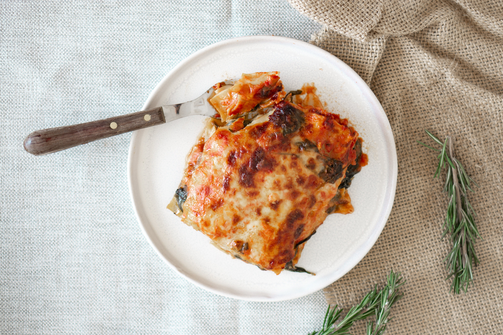

Lasagna

Description
Lasagna is a classic Italian dish made with layers of flat pasta sheets,
rich meat or vegetable sauce, creamy béchamel, and melted cheese.
It's a comforting and hearty meal that's perfect for gatherings or cozy dinners.
Ingredients
- Lasagna noodles
- Ground beef or Italian sausage
- Marinara sauce
- Béchamel sauce
- Mozzarella cheese
- Parmesan cheese
- Onion, garlic, and herbs for flavor
Steps
- Preheat your oven to 375°F (190°C) and grease a baking dish.
- Cook the lasagna noodles according to package instructions, then drain and set aside.
- In a skillet, brown the ground beef or sausage with chopped onions, garlic, and herbs. Add marinara sauce and simmer for 10-15 minutes.
- Layer the lasagna in the prepared dish: start with a layer of meat sauce, followed by noodles, béchamel sauce, and shredded cheeses. Repeat until you've used all ingredients, ending with a layer of cheese on top.
- Cover the dish with foil and bake for 25-30 minutes. Remove the foil and bake for an additional 10-15 minutes until the cheese is bubbly and golden brown.
- Let the lasagna cool for a few minutes before serving. Enjoy your delicious homemade lasagna!